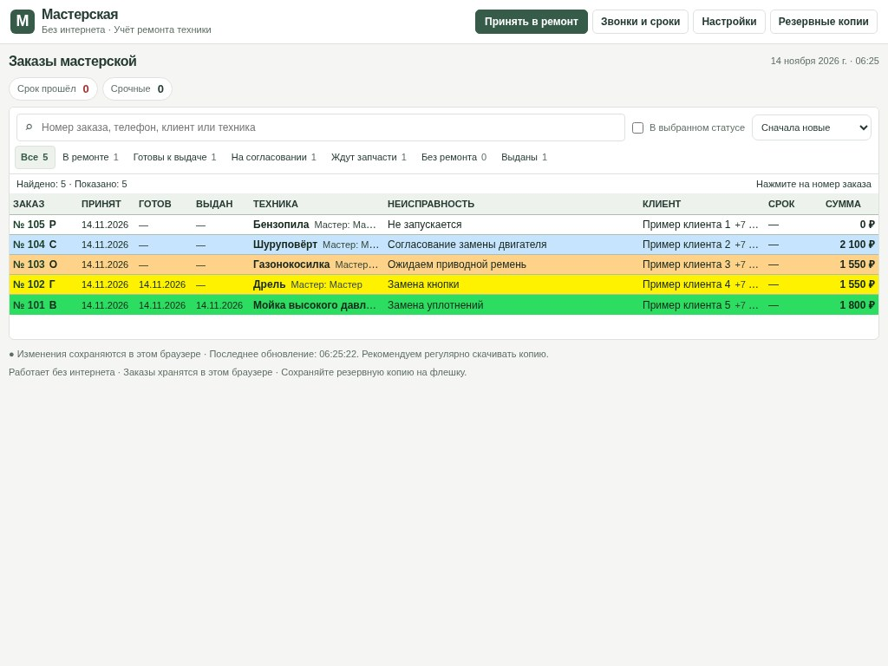
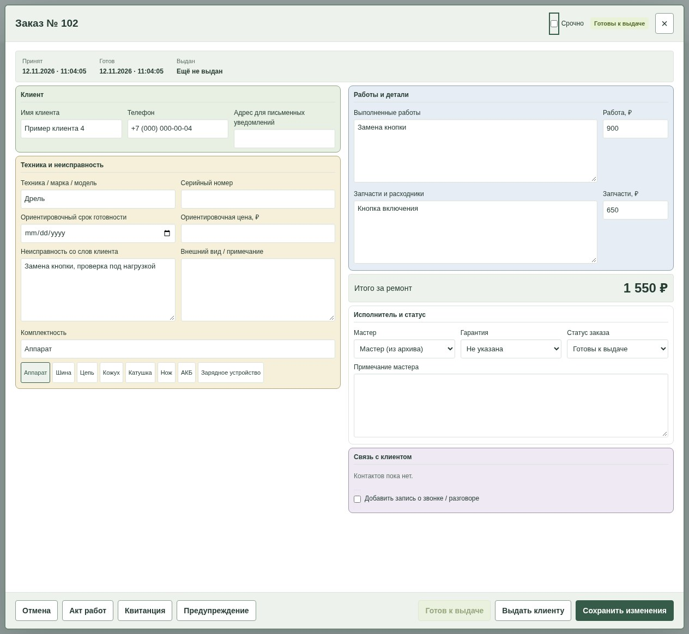

Принять
Техника, клиент и неисправность — в одной карточке.
Локальная программа · без интернета
Приём, ремонт и выдача техники в одном журнале. Открывается на обычном компьютере — без регистрации и сервера.
Один HTML-файл · Windows, Linux, macOS

Техника, клиент и неисправность — в одной карточке.
Поиск по номеру, клиенту, телефону или модели.
Работы, стоимость и статус заказа. Печать акта.
Данные на снимках вымышлены

Скачайте архив и распакуйте его в постоянную папку.
Скачать программу ↓Да, если установлен Chrome или Edge. Для Windows 7/8 нужна версия 109. Запуск на старом компьютере стоит проверить до начала работы.
В браузере на этом компьютере. Делайте резервную копию кнопкой «Резервные копии» и храните файл отдельно.